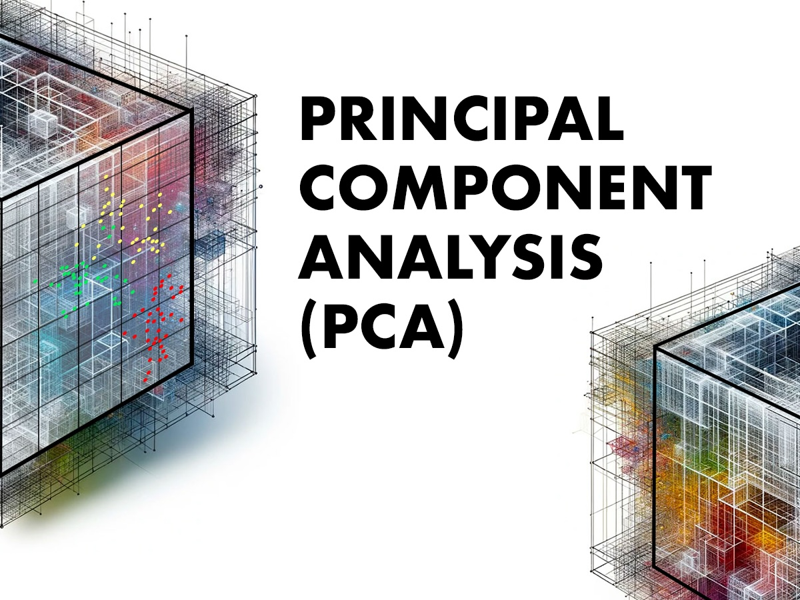

Spotify Data Analysis 2023: Unlocking the Soundtrack of the Future - This project dives deep into Spotify's 2023 data, revealing trends that shape the future of music consumption. Predictive modeling identifies what makes songs rise
to the top.

Spotify Data Analysis 2023: Unlocking the Soundtrack of the Future - This project dives deep into Spotify's 2023 data, revealing trends that shape the future of music consumption. Predictive modeling identifies what makes songs rise
to the top.
Spotify Data Analysis 2023: Unlocking the Soundtrack of the Future. Through predictive modeling, we identify what makes songs rise to the top, how user engagement evolves, and how lyrical sentiment influences listener behavior.
Federalist Papers Analysis: Decoding the Birth of a Nation - This project dives deep into the persuasive writings of Alexander Hamilton, James Madison, and John Jay using advanced natural language processing (NLP) techniques.
Federalist Papers Analysis: Using NLP techniques, we analyzed the rhetoric and recurring themes shaping the U.S. Constitution. The analysis highlights linguistic strategies to influence public opinion during the founding period.
Anime Recommendations Engine: Customizing Content with Machine Learning. We designed a recommendation system based on user preferences and viewing history using collaborative and content-based filtering techniques.
Anime Recommendations Engine: Tailoring content recommendations based on user preferences, the system uses machine learning techniques to suggest anime titles that match user behavior and viewing patterns.

Mecklenburg County Input Dashboard: Shaping the Future of Our Community. This project supports local leaders in making data-backed decisions for community projects, using Power BI to deliver actionable insights.
Mecklenburg County Input Dashboard: The dashboard offers insights for strategic planning and resource allocation, ensuring that park and greenway projects align with community needs.

Tractor Sales Forecasting: Fueling Future Growth - This project applies time series analysis using Python to forecast monthly tractor sales using ARIMA modeling.
Tractor Sales Forecasting: We used ARIMA models to predict tractor sales trends, providing critical insights for inventory management and business growth decisions.

Melanoma Detection Project: This project uses convolutional neural networks (CNNs) for precise feature extraction, assisting in the early detection of melanoma from dermatological images.
Melanoma Detection: This AI-driven project assists in the early detection of melanoma using CNNs, offering a tool that enhances early diagnosis and saves lives.

Boston Housing Classification: Using both Support Vector Machines (SVM) and Random Forest algorithms, we classified and predicted property value trends based on various characteristics.
Boston Housing Classification: Using SVM and Random Forest, we classified property values and predicted trends, offering insights into housing market dynamics.

Donor Behavior Analysis: This project leverages Principal Component Analysis (PCA) to explore patterns in donor behavior using fundraising data, simplifying the dataset for insightful analysis.
Donor Behavior Analysis: PCA was used to identify key components influencing donation patterns, allowing us to predict future donations with higher accuracy.

Big Bang Theory TV Series IMDB Rating Analysis: This project utilized SQL analytics to optimize ad placement strategies by analyzing episode attributes and viewer demographics.
Big Bang Theory TV Series IMDB Rating Analysis: SQL analytics helped optimize ad placements by analyzing detailed episode attributes and viewer demographics.
Survival Analysis Project: This project applied survival analysis techniques to predict the duration of events such as mechanical lifespans, patient survival times, and customer retention periods.
Survival Analysis Project: Modeling time-to-event data, we identified key factors affecting event durations like product lifespans and customer retention.
Network Science Coauthorship Visualization: This project focused on visualizing the coauthorship network of scientists specializing in network theory, using Gephi to map relationships and collaborations.
Network Science Coauthorship Visualization: Using Gephi, we visualized relationships and collaborations among network theory scientists to reveal patterns of academic influence.

Advanced Excel Data Exploration and Modeling: This project showcases advanced Excel features like PivotTables and Solver to analyze topics ranging from data exploration to dynamic models.
Advanced Excel Data Exploration and Modeling: This project fully leverages Excel features like Solver and PivotTables for sophisticated simulations and dynamic model creation.
{kind=link}
{kind=link}
{kind=link}
{kind=link}
{kind=link}